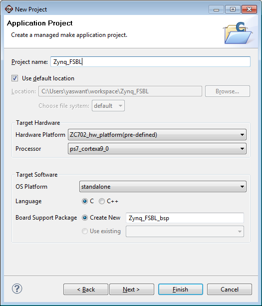
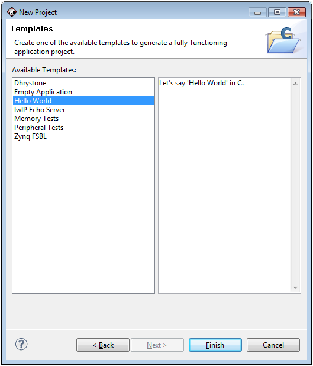

Creating software projects
Creating a new Zynq FSBL application project
To create a new Zynq FSBL application in SDK, do the following:
- Click File > New > Application Project. Note that this is equivalent to clicking on File > New > Project to open the New Project wizard, selecting Xilinx > Application Project, and clicking Next.
The New Application Project dialog box appears.

- In the Project Name field, type a name for the new project.
- Select the location for the project. To use the default location as displayed in the Location field, leave the Use default location check box selected. Otherwise, click to unselect the check box, then type or browse to the directory location.
- Hardware Platform drop-down list comes with pre defined hardware platforms for ZC702 , ZC706 & ZED hardware. Users can use this to start their application on a fly, instead of going for any hardware design creation tools. These are specific to PS only part of Zynq. Select appropriate target platform from Hardware Platform drop-down list. Select Create New option from the list tocreate a new hardware platform project by following the instructionsmentioned in Creating a new Hardware Platform Specification
- From the Processor drop-down lists, select the appropriate target processor.
- From the OS Platform drop-down list, select the target OS Platform.
- Select the appropriate Language check box (C/C++).
- Select Create New option of Board Support Project to create new board support package project. Select Use existing to select the existing Board Support Package projects.
- Click Next.
- Select Zynq FSBL template.

- Click Finish to create your application project and board support package (if it does not exist).
Copyright © 1995-2013 Xilinx, Inc. All rights reserved.